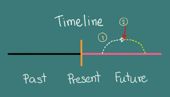

♦ ประโยคบอกเล่าจะเป็นโครงสร้างธรรมดา คือ ประธาน + will + be + กริยาเติม ing
| I, You, We, They, He, She, It | will | going. |
♦ ประโยคปฏิเสธคล้ายบอกเล่า เพียงแค่เติม not หรือ never หลัง will เท่านั้น
| I, You, We, They, He, She, It | will | not | going. |
การเปลี่ยนประโยคบอกเล่าเป็นคำถามก็ใช้สูตรเดิม คือ ถ้ามีกริยาช่วยในประโยค ให้ใช้กริยาช่วยขึ้นต้นประโยคได้เลย กริยาช่วยใน Future Simple Tense คือ will
♦ การถามรูปแบบประโยคบอกเล่า
| Will + ประธาน + กริยาช่องที่ 1 |
♦ การถามรูปแบบประโยคปฏิเสธ
| Will + ประธาน + not + กริยาช่องที่ 1 |
| Won’t + ประธาน + กริยาช่องที่ 1 |
ใช้กล่าวถึงเหตุการที่กำลังเกิดขึ้นในอนาคต หมายความว่า ณ ช่วงเวลาหนึ่งในอนาคต ฉันกำลังทำอะไรบางอย่างอยู่นะ ซึ่งนานๆ นานมากกว่าจะได้พูดทีหนึ่ง ในที่นีขอยกตัวอย่างมาให้ดู 2 แบบ คือ มีเหตุการณ์เดียว และมีสองเหตุการณ์เกิดขึ้นไล่เลี่ยกัน
♦ แบบมีเหตุการณ์เดียว ส่วนมากจะระบุเวลาในอนาคตด้วย เช่น
- I will be reading books at 8 o’clock tomorrow.
ฉันจะกำลังอ่านหนังสือเวลา 8 นาฬิกา วันพรุ่งนี้
หมายความว่า พรุ่งนี้เวลา 8 นาฬิกา ฉันกำลังอ่านหนัสืออยู่นะ ไม่เชื่อรอดูก็จะเห็น
- At nine o’clock tomorrow, we will be working on farm.
พรุ่งนี้เวลา 9 นาฬิกา พวกเราจะกำลังทำงานในฟาร์ม
หมายความว่า พรุ่งนี้ตอนเช้า ถ้าคุณมาฟาร์มของเรา คุณก็จะเห็นพวกเรากำลังทำงานอยู่
♦ แบบมีสองเหตุการณ์ ดู Time Line (เหตุการณ์ที่กำลังเกิดขึ้นใช้ Future Continuous อีกเหตุการณ์หนึ่งใช้ Present Simple)
- She will be waiting when you arrive.
หล่อนจะกำลังรอคอย เมื่อคุณมาถึง
หมายความว่า เมื่อคุณมาถึง คุณก็จะเห็นหล่อนกำลังรอคอยอยู่
- I will be sleeping when my mom gets home.
ฉันจะกำลังนอนหลับอยู่ ตอนที่แม่มาถึง
หมายความว่า คืนนี้เมื่อแม่มาถึง ฉันก็กำลังนอนหลับอยู่บนเตียง
Time Line เส้นเวลา

- I will be sleeping when my mom gets home.
ฉันจะกำลังนอนหลับอยู่ ตอนที่แม่มาถึง
เส้นสีขาวคือ ฉันจะกำลังนอนหลับอยู่ สีแดงคือ แม่มาถึง เส้นเหลื่องฉันอาจจะนอนต่อก็ได้ หรือจะตื่นตอนนั้นก็ได้
- I will watch TV tomorow morning. ฉันจะดูทีวีพรุ่งนี้เช้า
- I will be watching TV tomorrow morning. ฉันจะกำลังดูทีวีพรุ่งนี้เช้า
ความแตกต่างคือ การกระทำที่จะเกิดขึ้น
ประโยคแรกเป็นแค่ความคิดว่าจะทำ แต่ประโยคหลังชัวร์ๆเลย จะดูแน่ๆ พรุ่งนี้ ถ้าคุณตื่นขึ้นมาตอนเช้าก็จะเห็นฉันกำลังนั่งหน้าจอทีวีนั่นแหละ
ถ้าเจอประโยคแบบนี้ ให้เรานึกถึง present continuous ซึ่งกล่าวถึงเหตุการที่กำลังเกิดขึ้นในปัจจุบัน ส่วน Future continuous กล่าวถึงเหตุการทีกำลังเกิดในอนาคต ซึ่งเหมือนกับว่าเราทำนายล่วงหน้าว่าในอนาคต จะมีเหตุการณ์หนึ่งๆ กำลังเกิดขึ้นอยู่